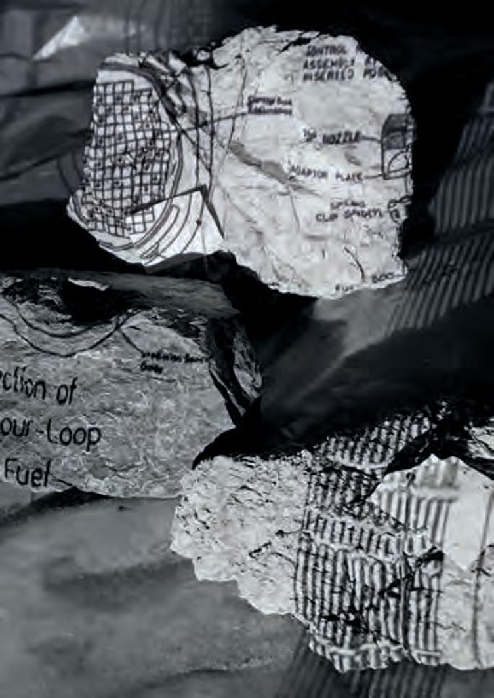

Helen Grove White

Ffotograffiaeth, printiadau, gosodiadau a llyfrau, gan gynnwys gwaith a ddangoswyd yn Siapan a’r Eisteddfod Genedlaethol.
Gweithiau ar newidiadau hinsawdd a phŵer niwcliar.
Photography, prints, installation and books, including work shown in Japan and the National Eisteddfod.
Works on climate change, archaeology and nuclear power.
01407 710769 / 07941 780479
hgrovewhite@gmail.com
www.helengrovewhite.co.uk
THE LAUNDRY STUDIO, BRYNDDU, LLANFECHELL, LL68 0RT
O Gaffi Mechell cymerwch ffordd Rhosgoch heibio’r garej. Cymerwch y troiad cyntaf ar y chwith ac wedyn yr ail droiad eto ar y chwith i’r rhodfa. Mae’r stiwdio ar y dde.
From the community café in Llanfechell take the Rhosgoch road out past the garage. Take first left and first left again into the drive. Fork right for the studio on your right.